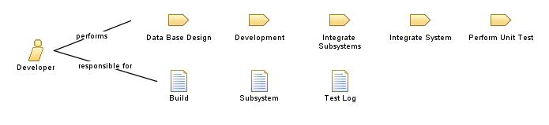

| Role: Developer |
 |
|
 |
||
| Modifies |
|
|
|---|---|---|
. تطوير برامج جديدة ، وتحليل البرامج والعمليات الحالية ، وتقديم التوصيات التي تؤدي إلى منتج أكثر فعالية من حيث التكلفة. 2. توثيق التعليمات البرمجية باستمرار طوال عملية التطوير من خلال سرد وصف للبرنامج ، وتعليمات خاصة ، وأي تغييرات يتم إجراؤها في جداول قاعدة البيانات على المستوى الإجرائي والوحداتي وقاعدة البيانات. 3. المساعدة في تقييم واختيار الحلول التي من المحتمل أن تلبي مجموعة مناسبة من متطلبات السمات الوظيفية والجودة المخصصة. 4. تطوير التصاميم التفصيلية للحلول المختارة بناءً على الأطر المعمارية وقيود التصميم. 5. تنفيذ وتنفيذ أنواع مختلفة من اختبارات التطوير بما في ذلك اختبار الوحدة واختبار تكامل المكونات واختبار النظام. 6. تنفيذ وتحقيق تكامل المنتج الكامل من خلال التجميع التدريجي لمكونات المنتج ، في مرحلة واحدة أو في مراحل تدريجية ، وفقًا لخطة وإجراءات تكامل محددة 7. تجميع مكونات المنتج وفقًا لاستراتيجية وإجراءات تكامل المنتج 8. تقييم مكونات المنتج المجمعة لتوافق الواجهة 1. Assisting in evaluating and selecting solutions that potentially satisfy an appropriate set of allocated functional and quality attribute requirements. 2. Developing detailed designs for the selected solutions based on the architecture frameworks and design constraints. 3. Implementing and performing the various types of development tests including unit test, component integration test and system test. 4. Implementing and achieving the complete product integration through progressive assembly of product components, in one stage or in incremental stages, according to a defined integration plan and procedures. 5. Developing new programs, analyzes current programs and processes, and making recommendations which yield a more cost-effective product. 6. Coding, testing, and troubleshooting programs utilizing the appropriate hardware, database, and programming technology. 7. Documenting code consistently throughout the development process by listing a description of the program, special instructions, and any changes made in database tables on procedural, modular and database level. 8. Assembling product components according to the product integration strategy and procedures. |
| Skills | تشمل المهارات والمعرفة المناسبة للمنفذ ما يلي: - معرفة النظام أو التطبيق - الإلمام بأدوات أتمتة الاختبار - معتمد من منظمات معروفة مثل Microsoft. - معرفة جيدة بالمواضيع التالية: MVC ، TFS ، الزاوي والتفاعل ، Git ، .net core ، API ، خدمات الويب ، MSSQL Server ، هياكل البيانات ، IIS وإطار الكيان. - درجة البكالوريوس في علوم الكمبيوتر أو مجال ذي صلة. - إجادة لغة البرمجة الحديثة مثل C # أو C أو Java. - العمل تحت الضغط The appropriate skills and knowledge for the implementer include: - knowledge of the system or application under test - familiarity with testing and test automation tools - certified from well-known organizations like Microsoft. - good knowledge on the following topics: MVC, TFS, angular and react, Git, .net core, API, web services, MSSQL Server, data structures, IIS and Entity framework. - Bachelor’s Degree in Computer Science or related field. - Proficiency in modern programming language such as C#, C or Java. - working under pressure |
|---|
| Guidelines |
|---|